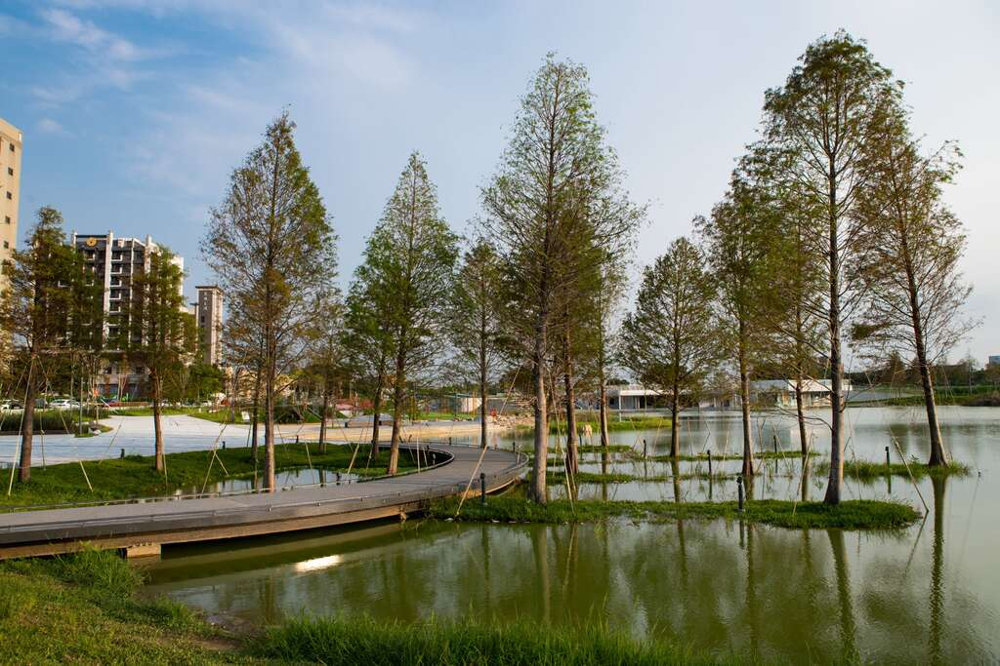
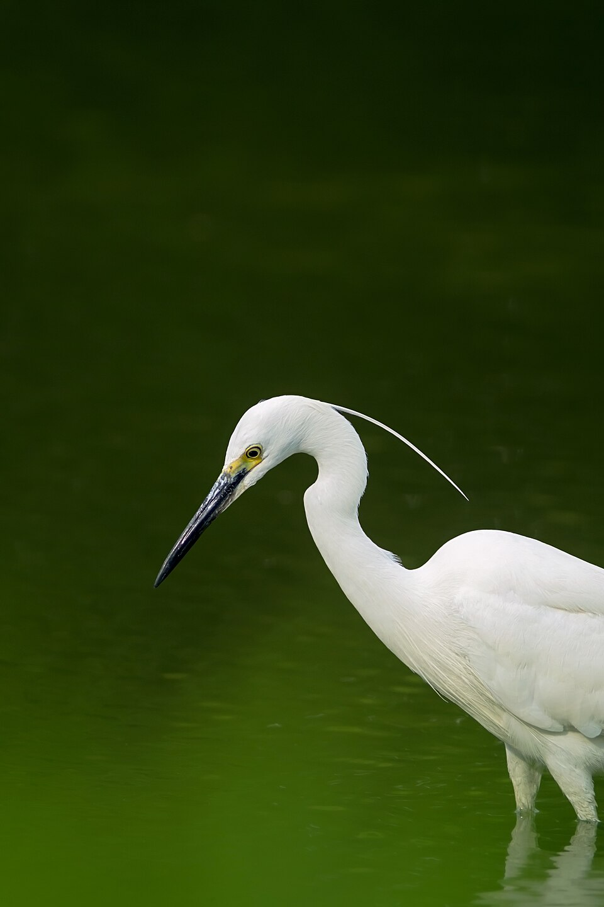
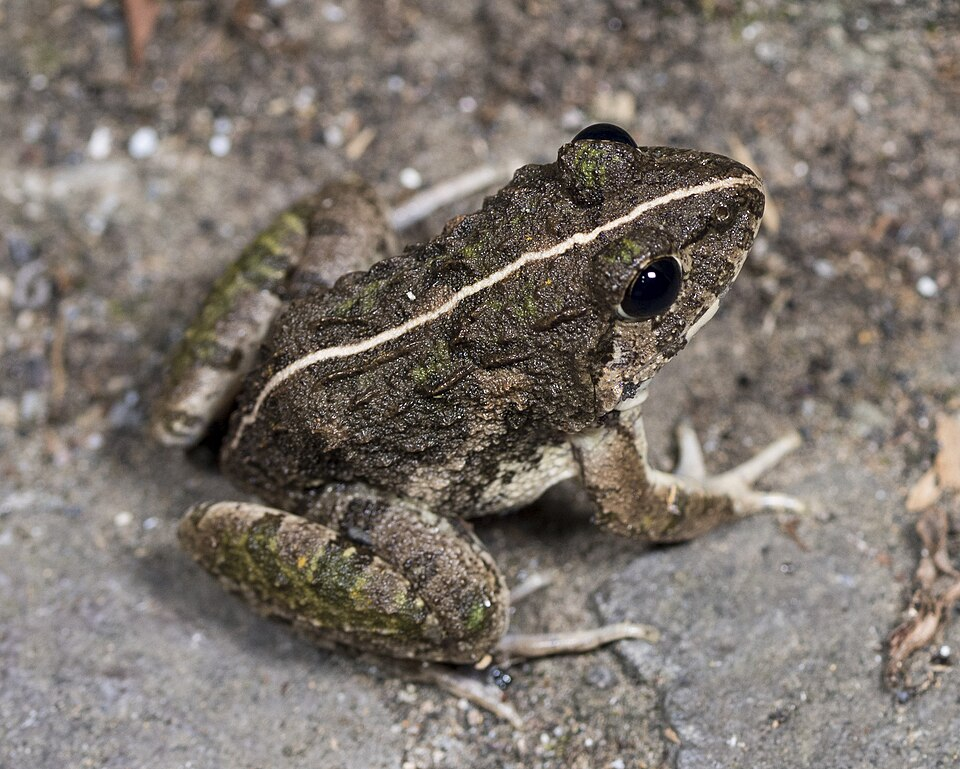
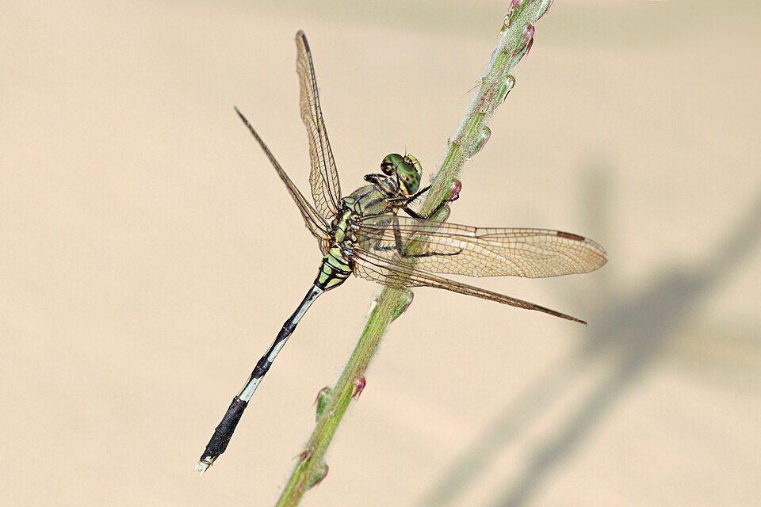

觀察方式
埤塘生態可以分成水域、岸邊和陸域三個層次。水生植物影響魚類、昆蟲和水質；岸邊植物提供遮蔽與停棲空間；鳥類、兩棲類和昆蟲則能反映棲地是否多樣。
這一頁把觀察項目分成植物、動物與鳥類、昆蟲與水質。實地調查時不一定要一次全部記錄，先固定觀察路線，再用照片、筆記和時間記錄做比較會更清楚。
從植物、動物、鳥類、昆蟲與水質觀察埤塘環境

埤塘生態可以分成水域、岸邊和陸域三個層次。水生植物影響魚類、昆蟲和水質；岸邊植物提供遮蔽與停棲空間；鳥類、兩棲類和昆蟲則能反映棲地是否多樣。
這一頁把觀察項目分成植物、動物與鳥類、昆蟲與水質。實地調查時不一定要一次全部記錄，先固定觀察路線，再用照片、筆記和時間記錄做比較會更清楚。
以下圖片是用來辨識特徵的參考照片，來源為 Wikimedia Commons，不代表全部都是華興池現場拍攝。實地報告時可以說明「看到類似特徵時如何判斷」，不確定種名時先記錄類群即可。

含羞草的葉片細小成對排列，受到碰觸會慢慢合起來。若在池畔草地看到它，可以記錄生長位置、日照和是否靠近步道，因為它常出現在受干擾的低矮草地。

酢漿草常見於草地或步道邊，葉片通常由三枚小葉組成。觀察時可比較它和其他小草的高度、覆蓋範圍，以及是否在濕潤或日照充足的地方較多。

車前草常出現在人走過或土壤較緊實的地方，葉片貼近地面展開。它可以用來討論步道活動、踩踏和植物適應環境之間的關係。

小白鷺喜歡在淺水區或水邊慢慢移動，尋找小魚、昆蟲或其他小型動物。觀察鳥類時不要靠太近，可以記錄牠停留的位置、覓食動作和是否受到人群干擾。

澤蛙常出現在濕潤草地、田邊或水溝附近。牠們需要水域繁殖，對岸邊棲地和水質變化較敏感，雨後或傍晚較容易聽到蛙鳴。

蜻蜓的幼蟲生活在水中，成蟲常在池邊飛行或停棲。若水邊植物夠多，牠們比較容易找到停留位置，因此可用來觀察水域和岸邊植被是否連續。
水生植物可分為挺水、浮葉、漂浮與沉水類型。它們能提供魚類與水生昆蟲躲藏、產卵和覓食的空間，也會影響水中光線和養分循環。
岸邊植物能固定土壤、減少沖刷，也能讓昆蟲、鳥類和小型動物有停留位置。觀察時可注意葉形、植株高度、是否靠近步道或水邊。
外來種若生長太快，可能覆蓋水面或排擠原生植物。調查時應記錄是否有大量蔓延的植物，並思考它對水質與其他生物的影響。
埤塘周邊可能出現魚類、小型哺乳動物或爬行動物。觀察時不一定要靠近捕捉，可以從水面波紋、足跡、叫聲和活動時間判斷生物存在。
水鳥常利用水面覓食或休息，陸域鳥類則會在樹木、草叢或步道邊活動。若同一地點常出現鳥類，表示該處可能有食物或較安全的停棲條件。
青蛙和蝌蚪需要濕潤環境，對水質和棲地變化較敏感。夜間或雨後較容易聽見蛙鳴，但觀察時要避免踩踏岸邊草叢。
蜻蜓、豆娘等昆蟲常和水域、岸邊植被有關。牠們的幼蟲生活在水中，成蟲會在水面或植物附近飛行，因此可作為觀察埤塘棲地狀態的線索。
水質可從透明度、氣味、藻類多寡、漂浮垃圾和生物活動初步判斷。若水面長期被藻類或漂浮植物覆蓋，可能代表養分過多或流動性不足。